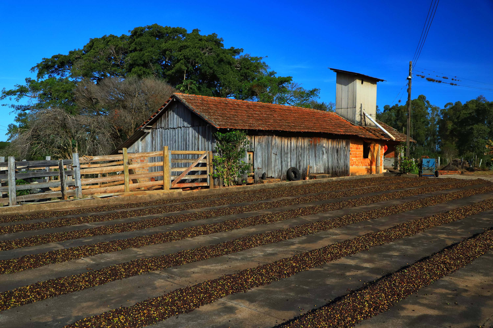
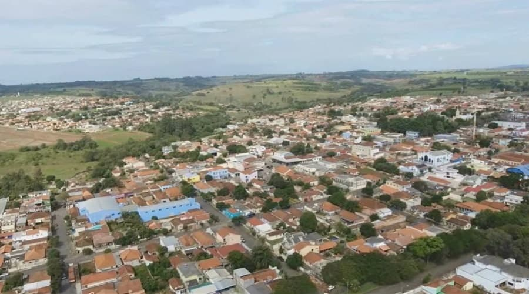

História do Café em Carlópolis
A história do café em Carlópolis remonta ao final do século XIX, quando os primeiros colonos descobriram o potencial agrícola da região. Graças ao seu clima subtropical e ao solo fértil, Carlópolis rapidamente se tornou um ponto estratégico para o cultivo de café no norte do Paraná. Durante o início do século XX, a cidade vivenciou um boom econômico impulsionado pelas exportações de café, que eram altamente valorizadas no mercado internacional. Essa tradição cafeeira continua a moldar a identidade cultural e econômica da cidade até os dias de hoje, com várias famílias dedicando-se ao cultivo de grãos de alta qualidade.
Produção de Café
Em Carlópolis, a modernização da produção de café inclui o uso de colheitadeiras mecânicas, que têm revolucionado o processo de colheita. Essas máquinas são projetadas para otimizar o tempo e os recursos, permitindo a colheita em larga escala com alta eficiência. A colheita mecânica é especialmente útil em terrenos mais planos, onde as máquinas podem operar de maneira mais eficaz. Essa tecnologia não só aumenta a produtividade, mas também ajuda a reduzir os custos operacionais e a minimizar o tempo de colheita, garantindo que os grãos sejam processados rapidamente e mantendo sua qualidade. Os produtores de Carlópolis combinam essas inovações tecnológicas com práticas sustentáveis, promovendo um equilíbrio entre produtividade e cuidado ambiental. A adoção dessas tecnologias reflete o compromisso da região com a excelência na produção de café, sem abrir mão da sustentabilidade e da preservação dos recursos naturais.
A Cidade de Carlópolis
Carlópolis é uma cidade situada no norte pioneiro do Paraná, conhecida por sua rica história e pela proeminência na produção de café. Fundada oficialmente em 1920, a cidade recebeu seu nome em homenagem ao presidente do estado, Carlos Cavalcanti de Albuquerque. A história de Carlópolis é marcada pelo desenvolvimento econômico impulsionado pela cultura do café, que se tornou uma das principais atividades econômicas da região desde o início do século XX. A localização estratégica de Carlópolis, às margens da represa da Usina Hidrelétrica de Chavantes, contribuiu para o seu desenvolvimento, oferecendo um ambiente propício para a agricultura. Nas últimas décadas, Carlópolis tem se destacado novamente no cenário nacional como um dos maiores produtores de café do Paraná. Graças aos esforços contínuos dos agricultores locais, o café de Carlópolis é reconhecido por sua alta qualidade, conquistando mercados em todo o Brasil e no exterior.
